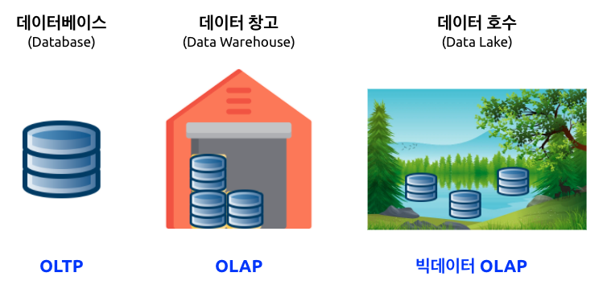
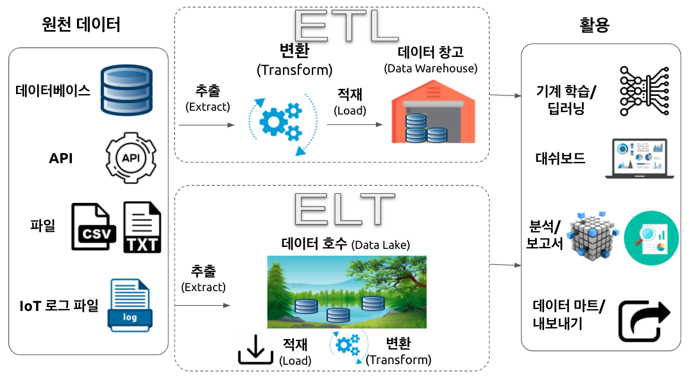
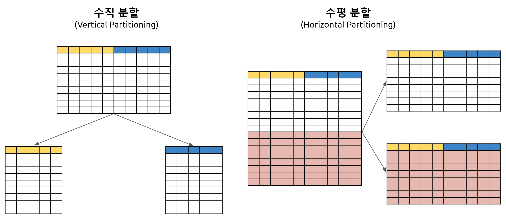
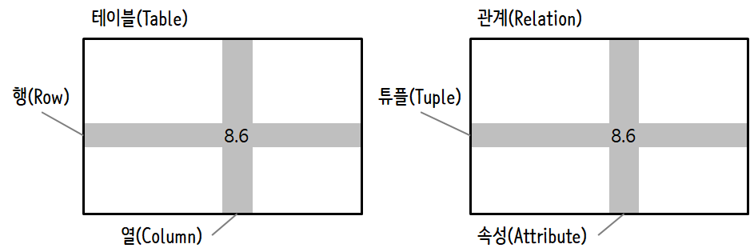

library(RSQLite)
music_db <- "data/music.sqlite"
conn <- dbConnect(drv = SQLite(), dbname= music_db)
dbSendQuery(conn, "INSERT INTO Tracks (title, plays) VALUES ( ?, ? )", c('Thunderstruck', 20))
dbSendQuery(conn, "INSERT INTO Tracks (title, plays) VALUES ( ?, ? )", c('My Way', 15))
dbDisconnect(conn)들어가며
엑셀로 대표되는 스프레드시트를 사용하는 것은 많은 사람들에게 익숙한 경험이다. 이들은 데이터를 쉽게 조작하고 분석할 수 있는 기본적인 도구로 활용되지만, 데이터셋이 복잡해지면서 한계에 부딪힌다. 이때 스프레드시트 한계를 넘어서 데이터베이스의 역할이 중요해진다. 간단한 수치 연산에는 스프레드시트가 충분할 수 있지만, 복잡하고 큰 데이터셋을 빠르고 효율적으로 처리하려면 데이터베이스가 필요하다. SQL(Structured Query Language)은 데이터베이스를 관리하고 조작하는 데 있어 중요한 역할을 한다. 데이터베이스가 어떻게 작동하는지 이해하는 것은 단순한 데이터 조작 능력을 넘어서, 현재 사용되는 다양한 시스템들이 왜 이와 같은 방식으로 작동하는지, 왜 데이터를 특정한 방식으로 구조화하는지에 대한 깊은 이해 를 할 수 있다.
이 책은 데이터베이스 기본 개념과 SQL을 다룬다. 데이터베이스의 기본 개념을 이해하고 SQL을 사용하는 방법을 익히면, 데이터베이스를 사용하는 다양한 시스템들을 쉽게 이해할 수 있다. 또한 데이터베이스를 사용하는 다양한 시스템들을 이해하면, 데이터베이스 기본 개념과 SQL을 더 깊게 이해할 수 있다. 더 나아가 소프트웨어 카펜트리 콘텐츠에 기반한 “챗GPT 유닉스 쉘” (이광춘 와/과 신종화 2023) 후속으로 “챗GPT SQL”을 출판하게 되면서 2023년을 강타한 생성형 AI의 대표작 챗GPT를 SQL에 접목하는 내용도 새롭게 추가했다.
데이터 구분
데이터는 정형데이터(RDBMS), 비정형 데이터, 반정형 데이터로 크게 나눌 수 있다. 각 자료형에 따라 장단점이 있는 것은 명확하다. 정형데이터는 분석하기 용이한 반면 확장성과 유연성이 떨어지고, 비정형 데이터는 분석하기는 다소 어려움이 있으나 확장성과 용이성에서는 장점을 갖는다. .csv, .xml, .json 파일은 그 중간적인 특성을 갖는 반정형 데이터로 분류도힌다.

OLTP vs. OLAP
OLTP (OnLine Transaction Processing)는 데이터 자체 처리에 중점을 둔 개념인데 반해, OLAP (OnLine Analytical Processing)은 저장된 데이터를 분석하여 꿰뚤어 볼 수 있는 능력(Insight)를 도출하는데 중심을 두고 있다.
OLAP의 대표적인 예로 편의점 판매시점 정보관리(Point-Of-Sales, POS) 기계를 들어보자. 편의점에서 물건을 구매한 경우 다음과 같은 거래가 발생된다.
- 고객 카드에서 현금 10,000원 인출
- 편의점 통장에 10,000 지급
- 명세표 출력
상기 3건의 작업 프로세스가 하나의 트랜잭션(transaction) 묶어 모두 성공적으로 처리가 되어야 편의점 물건구매가 완료되도록 개발한다.
반면에 OLAP은 데이터를 체계적으로 저장하여 데이터에 기반한 의사결정지원을 할 수 있도록 주안점을 두고 있다.
| OLAP | OLTP | |
|---|---|---|
| 목적 | 트랜젝션 처리 | 데이터 분석과 보고서 작성, 대쉬보드 시각화 |
| 설계 | 앱 기능 지향 | 비즈니스 주제 지향 |
| 데이터 | 운영계, 실시간 최신 데이터 | 정보계, 통합/이력 데이터 |
| 크기 | 기가 바이트, 스냅샷 | 테라데이터, 아카이브 |
| SQL 쿼리 | 단순 트랜잭션, 빈번한 갱신 | 복잡한 집계 쿼리 |
| 사용자 | 아주 많음 | 분석가 포함 일부 |
따라서, OLTP는 운영 데이터베이스(Operational Database)로 적합하여 쓰기 업무(Write-intensive)가 많은 경우 빠르고 안전하게 레코드를 삽입(insert)하는데 특화된 반면, OLAP은 데이터 창고(Data Warehouse) 업무에 적합한데 다양한 분석업무를 수행할 때 쿼리 작업을 속도감있게 진행할 수 있어 읽기 업무(Read-intensive)에 특화되어 있다.
DW, Data Lake 1
전통적인 데이터베이스(Database)는 관계형 데이터베이스를 통해서 실시간 정형데이터를 빠르고 신뢰성있게 처리하는데 운영계를 지탱하는 주된 쓰임새가 있으며, 데이터 창고(Data Warehouse)는 이력 데이터를 통합하여 꿰뚤어 볼 수 있는 능력(Insight)을 제공함은 물론 보고서와 전체적인 현황을 대쉬보드를 통해 제공하는데 큰 의미가 있다. 데이터 호수(Data Lake)는 정형, 반정형, 비정형 데이터를 모두 저장하고 관리한다는 측면에서 유연성과 확장성을 내재하고 있으며 빅데이터를 분석하여 OLAP에서 추구하는 바를 한단계 더 넓혔다는 점에서 의의를 둘 수 있다.

데이터 호수(Data Lake)는 특정한 구조가 없기 때문에 접근하기 용이하고 쉽게 수정하기도 용이한 반면에 데이터 창고(Data Warehouse)는 상대적으로 유연성이 떨어진다. 뿐만 아니라 데이터 과학자는 아직 결정되지 않는 비즈니스 활용 사례를 데이터 문제로 바꿔 모형을 만들고 시각화를 하는데 데이터 호수를 적합한 데 반해 비즈니스 현업전문가는 일단 전처리가 된 데이터를 데이터 창고에 넣어 특정 목적을 달성하는데 활용된다는 점에서 비교가 된다.
| 데이터 호수 | 데이터 창고 | |
|---|---|---|
| 자료구조 | 원천 데이터 (Raw Data) | 전처리 된 데이터 |
| 데이터 활용 목적 | 미결정 상태 | 현재 사용 중 |
| 사용자 | 데이터 과학자 | 비즈니스 현업전문가 |
| 접근성 | 접근성 높고 신속한 업데이트 | 변경하기 쉽지 않고 비용도 많이 소요됨. |
클라우드 서비스도 데이터 창고(Data Warehouse)를 기능으로 제공하고 있는데 상품명은 다음과 같다.
- AWS: 아마존 Redshift
- MS Azure: Azure SQL Data Warehouse
- 구글: 구글 빅쿼리(Big Query)
데이터 호수도 클라우드 서비스에서 제공된다. Object Storage와 함께 하둡/스파크 빅데이터 소프트웨어와 함께 검토된다.
- AWS: AWS S3
- MS Azure: Blob Storage / Azure Data Lake Storage
- 구글: Cloud Storage
- 네이버: Object Storage
ETL과 ELT 2
ETL은 추출, 변환, 적재(Extract, Transform, Load)의 약자로 동일 기종 혹은 이기종의 원천데이터로부터 데이터 웨어하우스에서 쌓는 과정을 뜻하는데 변환(Transform) 과정이 무척 많은 노력이 투여된다. 반면에 ELT는 데이터를 먼저 적재한 후에 필요에 따라 변환과정을 거쳐 후속 작업에 사용한다. 데이터 호수 ELT 프로세스가 매력적으로 보이지만 데이터 카탈로그가 잘 관리되지 않는다면 데이터 늪(Data Swamp)가 될 수 있다.

데이터 호수를 잘 관리하지 않는다면 데이터 늪에 빠질 수 있는데 메타데이터를 잘 관리하고 거버넌스를 확립해야 되고 비정형데이터도 많이 다루기 때문에 데이터 전문가 과학자를 확보하여 효율성을 높인다.
데이터 통합(integration)
원천데이터가 서로 다른 형태로 다양하게 존재하는 상황에서 데이터를 통합한다는 것은 시스템을 맞추는 것을 넘어 개념적인 데이터 모델로 정립하여야 하고 관련하여 파생된느 다양한 문제를 조화롭게 해결하는 것으로 정의할 수 있다.
먼저 데이터를 한곳에 모은다고 하면 어떤 데이터를 모을 것인지 정의하고 클라우드 서비스를 사용한다고 하면 AWS Redshift 혹은 S3를 상정하고 혹시나 포함될 수 있는 개인정보도 사전에 식별하여 마스킹 등을 통해 익명화시켜야 되며 데이터 혈통(Data Lineage)도 구축하여 투명성과 가시성도 확보한다.

테이블 분할과 샤딩
지금은 빅데이터 시대라 데이터가 커지게 되면 테이블에 담을 수 없는 상황이 온다. 이런 문제를 해결하기 위해 도입된 개념이 분할(Partition) 이다. 테이블 크기가 예를 들어 100GB 혹은 1TB가 되면 인덱스도 커져서 메모리에 적재가 되지 않아 쿼리 속도와 업데이트 속도가 현격히 늦어지게 된다. 이런 경우 테이블을 더 작은 단위로 쪼개는데 이를 분할(Partition)이라고 한다.
테이블을 분할하게 될 경우 개념과 논리 데이터 모형은 동일하지만 물리 데이터 모형이 분할에 영향을 받게 된다.
- 개념 데이터 모형(Concept Data Model): Entity, Relationship, Attributes
- ERD(Entity Relational Diagram), UML 다이어그램
- 논리 데이터 모형(Logical Data Model): 테이블, 칼럼, 관계
- 데이터베이스 스키마와 모형: 관계형 모형, 스타 스키마(Star Sceman)
- 분할(Partition) 혹은 샤딩(Sharding)에 영향을 받음
- 물리 데이터 모형(Physical Data Model): 물리적 저장장치
- 백업 시스템, 파티션, CPU, 저장공간 등
- 분할(Partition) 혹은 샤딩(Sharding)의 영향을 받음.
테이블을 분할하는 방법은 수평 분할 (Horizontal Partitioning)과 수직 분할 (Vertical Partitioning) 두가지 방법이 있다.

데이터베이스 샤딩(databae sharding)은 테이블이 동일한 데이터베이스에 있지 않고 다른 기계에 있다는 점에서 차이가 난다. 3

데이터베이스 설계
데이터베이스 설계(Database Design)는 데이터를 논리적으로 저장하는 방식으로 데이터베이스 모델(Database Model)을 사용한다. 데이터베이스 모델(Database Model)은 데이터베이스 구조에 대한 최상위 사양서의 역할을 한다. 일반적으로 관계형 데이터베이스 모형(Relational Database Model)을 사용하지만 NoSQL, 객체지향 DB 모형, 네트워크 DB 모델 등이 있다. 데이터베이스의 청사진으로 스키마를 사용해서 테이블, 필드, 관계, 인덱스, 뷰로 구성하여 작성한다.
- 데이터 (Data) ← 논리 모형
- 데이터베이스 모형 ← 데이터 구조에 대한 사양서
- 스키마 ← 레고 블럭(Table, Field, Relation, Index, View 등)으로 데이터베이스 설계
즉, 데이터를 체계적으로 구조화하는 논리모형을 먼저 구상하고 나서 사양서를 작성하고 실제 데이터베이스 설계로 들어간다.
데이터 모형(Data Modeling)
데이터를 저장하는 방식에 대해 데이터 모형(Data Model)을 제작하는 단계는 다음과 같다.
- 개념 데이터 모형(Concept Data Model): Entity, Relationship, Attributes
- ERD(Entity Relational Diagram), UML 다이어그램
- 논리 데이터 모형(Logical Data Model): 테이블, 칼럼, 관계
- 데이터베이스 스키마와 모형: 관계형 모형, 스타 스키마(Star Sceman)
- 물리 데이터 모형(Physical Data Model): 물리적 저장장치
- 백업 시스템, 파티션, CPU, 저장공간 등
데이터 정규화 4 5
관계형 데이터베이스의 설계에서 정규화(normalization)는 중복을 최소화하도록 데이터를 구조화하는 프로세스를 지칭한다. 관계형 모델의 발견자인 에드거 F. 커드는 1970년에 제 1 정규형(1NF)로 알려진 정규화의 개념을 도입하였고, 에드거 F. 커드는 이어서 제 2 정규형(2NF)과 제 3 정규형(3NF)을 1971년에 정의하였으며, 1974년에는 레이먼드 F. 보이스와 함께 보이스-코드 정규화(BCNF)를 정의하였다. 통상 관계형 데이터베이스 테이블이 제 3 정규(3NF)형이 되었으면 정규화(Normalization) 되었다고 한다. 따라서, 데이터 정규형(Normal Forms)은 1NF 부터 3NF까지가 많이 회자된다.
- 제 1 정규형 (1 NF)
- 각 레코드는 유일무이(unique)해야 한다. 즉, 중복(duplication)이 없어야 함.
- 각 셀은 하나의 값만 가져야 함.
- 제 2 정규형 (2 NF)
- 제 1 정규형을 만족한다.
- 기본키(primary key)가 한 칼럼이면 자동으로 제 2 정규형을 만족한다.
- 기본키가 아닌 모든 속성이 기본키에 완전 함수 종속되어야 한다.
- 제 3 정규형 (3 NF)
- 제 2 정규형을 만족한다.
- 기본키가 아닌 모든 속성이 기본키에 이행적 함수 종속이 되지 않아야 한다.
- 즉, 이행(移行)적 함수 종속 (Transitive Functional Dependency)이 없어야 한다.
- 함수 종속 사례로 X, Y, Z 에 대해 X → Y 이고 Y → Z 이면 X → Z 가 성립한다. 이를 Z 가 X 에 이행적으로 함수 종속되었다고 함.
데이터베이스가 뭔가요?
데이터베이스(database)는 데이터를 저장하기 위한 목적으로 조직된 파일이다. 대부분의 데이터베이스는 키(key)와 값(value)를 매핑한다는 의미에서 딕셔너리처럼 조직되었다. 가장 큰 차이점은 데이터베이스는 디스크(혹은 다른 영구 저장소)에 위치하고 있어서, 프로그램 종료 후에도 정보가 계속 저장된다. 데이터베이스가 영구 저장소에 저장되어서, 컴퓨터 주기억장치(memory) 크기에 제한받는 딕셔너리보다 훨씬 더 많은 정보를 저장할 수 있다.
딕셔너리처럼, 데이터베이스 소프트웨어는 엄청난 양의 데이터 조차도 매우 빠르게 삽입하고 접근하도록 설계되었다. 컴퓨터가 특정 항목으로 빠르게 찾아갈 수 있도록 데이터베이스에 인덱스(indexes)를 추가한다. 데이터베이스 소프트웨어는 인덱스를 구축하여 성능을 보장한다.
다양한 목적에 맞춰 서로 다른 많은 데이터베이스 시스템이 개발되어 사용되고 있다. Oracle, MySQL, Microsoft SQL Server, PostgreSQL, SQLite이 여기에 포함된다. 이 책에서는 SQLite를 집중해서 살펴볼 것이다. 왜냐하면 매우 일반적인 데이터베이스이며 파이썬에 이미 내장되어 있기 때문이다. 응용프로그램 내부에서 데이터베이스 기능을 제공하도록 SQLite가 다른 응용프로그램 내부에 내장(embedded)되도록 설계되었다. 예를 들어, 다른 많은 소프트웨어 제품이 그렇듯이, 파이어폭스 브라우져도 SQLite를 사용한다.
이번 장에서 기술하는 트위터 스파이더링 응용프로그램처럼 정보과학(Informatics)에서 마주치는 몇몇 데이터 조작 문제에 SQLite가 적합하다.
데이터베이스 개념
처음 데이터베이스를 볼때 드는 생각은 마치 엑셀같은 다중 시트를 지닌 스프레드쉬트(spreadsheet)같다는 것이다. 데이터베이스에서 주요 데이터 구조물은 테이블(tables), 행(rows), and 열(columns)이 된다.

관계형 데이터베이스의 기술적인 면을 설명하면 테이블, 행, 열의 개념은 관계(relation), 튜플(tuple), 속성(attribute) 각각 형식적으로 매칭된다. 이번 장에서는 조금 덜 형식 용어를 사용한다.
데이터베이스 테이블 생성
데이터베이스는 R 리스트 혹은 딕셔너리보다 좀더 명확히 정의된 구조를 요구한다. 6
데이터베이스에 테이블(table)을 생성할 때, 열(column)의 명칭과 각 열(column)에 저장하는 테이터 형식을 사전에 정의해야 한다. 데이터베이스 소프트웨어가 각 열의 데이터 형식을 인식하게 되면, 데이터 형식에 따라 데이터를 저장하고 찾아오는 방법을 가장 효율적인 방식을 선택할 수 있다.
다음 url에서 SQLite에서 지원되는 다양한 데이터 형식을 살펴볼 수 있다.
처음에는 데이터 구조를 사전에 정의하는 것이 불편하게 보이지만, 대용량의 데이터가 데이터베이스에 포함되더라도 데이터의 빠른 접근을 보장하는 잇점이 있다.
데이터베이스 파일과 데이터베이스에 두개의 열을 가진 Tracks 이름의 테이블을 생성하는 코드는 다음과 같다.
연결 (connect) 연산은 현재 디렉토리 data/music.sqlite3 파일에 저장된 데이터베이스에 “연결(connection)”한다. 파일이 존재하지 않으면, 자동 생성된다. “연결(connection)”이라고 부르는 이유는 때때로 데이터베이스가 응용프로그램이 실행되는 서버로부터 분리된 “데이터베이스 서버(database server)”에 저장되기 때문이다. 지금 간단한 예제 파일의 경우에 데이터베이스가 로컬 파일 형태로 R 코드 마찬가지로 동일한 디렉토리에 있다.
파일을 다루는 파일 핸들(file handle)처럼 데이터베이스에 저장된 파일에 연산을 수행하기 위해서 커서(cursor)를 사용한다. cursor()를 호출하는 것은 개념적으로 텍스트 파일을 다룰 때 readLines()을 호출하는 것과 개념적으로 매우 유사하다.

커서가 생성되면, dbGetQuery() 함수를 사용하여 데이터베이스 콘텐츠에 명령어 실행을 할 수 있다.
데이터베이스 명령어는 특별한 언어로 표현된다. 단일 데이터베이스 언어를 학습하도록 서로 다른 많은 데이터베이스 업체 사이에서 표준화되었다.
데이터베이스 언어를 SQL(Structured Query Language 구조적 질의 언어)로 부른다.
상기 예제에서, 데이터베이스에 두개의 SQL 명령어를 실행했다. 관습적으로 데이터베이스 키워드는 대문자로 표기한다. 테이블명이나 열의 명칭처럼 사용자가 추가한 명령어 부분은 소문자로 표기한다.
첫 SQL 명령어는 만약 존재한다면 데이터베이스에서 Tracks 테이블을 삭제한다. 동일한 프로그램을 실행해서 오류 없이 반복적으로 Tracks 테이블을 생성하도록하는 패턴이다. DROP TABLE 명령어는 데이터베이스 테이블 및 테이블 콘텐츠 전부를 삭제하니 주의한다. (즉, “실행취소(undo)”가 없다.)
`dbGetQuery(conn, 'DROP TABLE IF EXISTS Tracks ') `두번째 명령어는 title 문자형 열과 plays 정수형 열을 가진 Tracks으로 명명된 테이블을 생성한다.
`dbGetQuery(conn, 'CREATE TABLE Tracks (title TEXT, plays INTEGER)')`이제 Tracks으로 명명된 테이블을 생성했으니, SQL INSERT 연산을 통해 테이블에 데이터를 넣을 수 있다. 다시 한번, 데이터베이스에 연결하여 커서(cursor)를 얻어 작업을 시작한다. 그리고 나서 커서를 사용해서 SQL 명령어를 수행한다.
SQL INSERT 명령어는 어느 테이블을 사용할지 특정한다. 그리고 나서 (title, plays) 포함할 필드 목록과 테이블 새로운 행에 저장될 VALUES 나열해서 신규 행을 정의를 마친다. 실제 값이 execute() 호출의 두번째 매개변수로 튜플 ('My Way', 15) 로 넘겨는 것을 표기하기 위해서 값을 물음표 (?, ?)로 명기한다.
library(RSQLite)
music_db <- "data/music.sqlite"
conn <- dbConnect(drv = SQLite(), dbname= music_db)
dbSendQuery(conn, "INSERT INTO Tracks (title, plays) VALUES ( ?, ? )",
c('Thunderstruck', 20))
dbSendQuery(conn, "INSERT INTO Tracks (title, plays) VALUES ( ?, ? )",
c('My Way', 15))
print('Tracks:')
dbGetQuery(conn, 'SELECT title, plays FROM Tracks')
dbSendQuery(conn, "DELETE FROM Tracks WHERE plays < 100")
dbDisconnect(conn)먼저 테이블에 두개 열을 삽입(INSERT)하여 데이터를 데이터베이스에 저장되도록 했다. 그리고 나서, SELECT 명령어를 사용하여 테이블에 방금 전에 삽입한 행을 불러왔다. SELECT 명령어에서 데이터를 어느 열(title, plays)에서, 어느 테이블Tracks에서 가져올지 명세한다. 프로그램 실행결과는 다음과 같다.
> dbGetQuery(conn, 'SELECT title, plays FROM Tracks')
title plays
1 Thunderstruck 20
2 My Way 15프로그램 마지막에 SQL 명령어를 실행 사용해서 방금전에 생성한 행을 모두 삭제(DELETE)했기 때문에 프로그램을 반복해서 실행할 수 있다. 삭제(DELETE) 명령어는 WHERE 문을 사용하여 선택 조건을 표현할 수 있다. 따라서 명령문에 조건을 충족하는 행에만 명령문을 적용한다. 이번 예제에서 기준이 모든 행에 적용되어 테이블에 아무 것도 없게 된다. 따라서 프로그램을 반복적으로 실행할 수 있다. 삭제(DELETE)를 실행한 후에 데이터베이스에서 데이터를 완전히 제거했다.
SQL 요약
지금까지, R 예제를 통해서 SQL(Structured Query Language)을 사용했고, SQL 명령어에 대한 기본을 다루었다. 이번 장에서는 SQL 언어를 보고 SQL 구문 개요를 살펴본다.
대단히 많은 데이터베이스 업체가 존재하기 때문에 호환성의 문제로 SQL(Structured Query Language)이 표준화되었다. 그래서, 여러 업체가 개발한 데이터베이스 시스템 사이에 호환하는 방식으로 커뮤니케이션 가능하다.
관계형 데이터베이스는 테이블, 행과 열로 구성된다. 열(column)은 일반적으로 텍스트, 숫자, 혹은 날짜 자료형을 갖는다. 테이블을 생성할 때, 열의 명칭과 자료형을 지정한다.
CREATE TABLE Tracks (title TEXT, plays INTEGER)테이블에 행을 삽입하기 위해서 SQL INSERT 명령어를 사용한다.
INSERT INTO Tracks (title, plays) VALUES ('My Way', 15)INSERT 문장은 테이블 이름을 명기한다. 그리고 나서 새로운 행에 놓고자 하는 열/필드 리스트를 명시한다. 그리고 나서 키워드 VALUES와 각 필드 별로 해당하는 값을 넣는다.
SQL SELECT 명령어는 데이터베이스에서 행과 열을 가져오기 위해 사용된다. SELECT 명령문은 가져오고자 하는 행과 WHERE절을 사용하여 어느 행을 가져올지 지정한다. 선택 사항으로 ORDER BY 절을 이용하여 반환되는 행을 정렬할 수도 있다.
SELECT * FROM Tracks WHERE title = 'My Way'* 을 사용하여 WHERE 절에 매칭되는 각 행의 모든 열을 데이터베이스에서 가져온다.
주목할 점은 R과 달리 SQL WHERE 절은 등식을 시험하기 위해서 두개의 등치 기호 대신에 단일 등치 기호를 사용한다. WHERE에서 인정되는 다른 논리 연산자는 <,>,<=,>=,!= 이고, 논리 표현식을 생성하는데 AND, OR, 괄호를 사용한다.
다음과 같이 반환되는 행이 필드값 중 하나에 따라 정렬할 수도 있다.
SELECT title,plays FROM Tracks ORDER BY title행을 제거하기 위해서, SQL DELETE 문장에 WHERE 절이 필요하다. WHERE 절이 어느 행을 삭제할지 결정한다.
SELECT title,plays FROM Tracks ORDER BY title다음과 같이 SQL UPDATE 문장을 사용해서 테이블에 하나 이상의 행 내에 있는 하나 이상의 열을 갱신(UPDATE)할 수 있다.
UPDATE Tracks SET plays = 16 WHERE title = 'My Way'UPDATE 문장은 먼저 테이블을 명시한다. 그리고 나서, SET 키워드 다음에 변경할 필드 리스트 와 값을 명시한다. 그리고 선택사항으로 갱신될 행을 WHERE절에 지정한다. 단일 UPDATE 문장은 WHERE절에서 매칭되는 모든 행을 갱신한다. 혹은 만약 WHERE절이 지정되지 않으면,테이블 모든 행에 대해서 갱신(UPDATE)을 한다.
네가지 기본 SQL 명령문(INSERT, SELECT, UPDATE, DELETE)은 데이터를 생성하고 유지 관리하는데 필요한 기본적인 4가지 작업을 가능케 한다.
이광춘, 와/과 신종화. 2023. 챗GPT 유닉스쉘. "한국 R 사용자회".